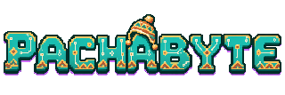

PROTOTIPO · RUTA 01

Mapa de la Trama
Haz clic o usa Tab sobre el juego para jugar. Al enfocar la navegación el juego se pausa; vuelve a enfocarlo para continuar. Esc también pausa. Arte generado con IA y elementos procedurales. Los logros se reinician al recargar; Amaru siempre está disponible desde el mapa.